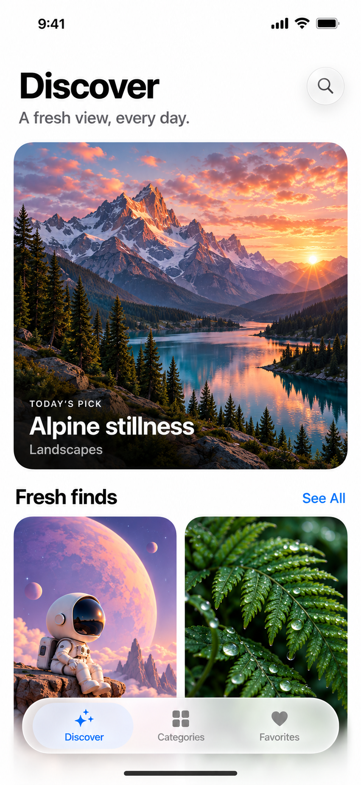
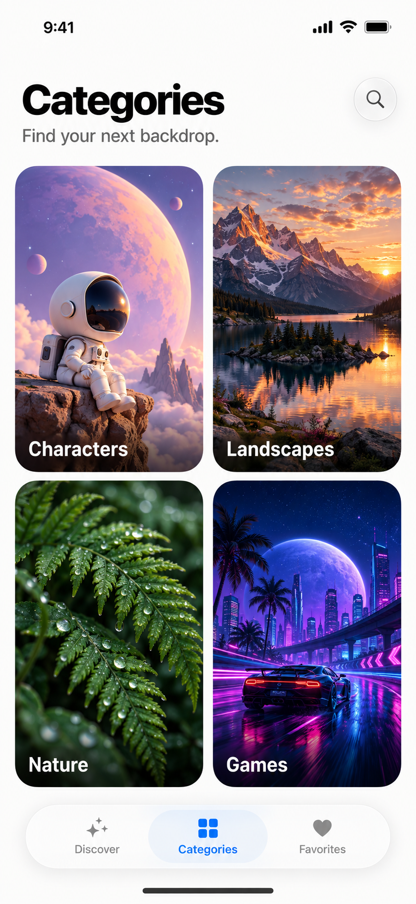
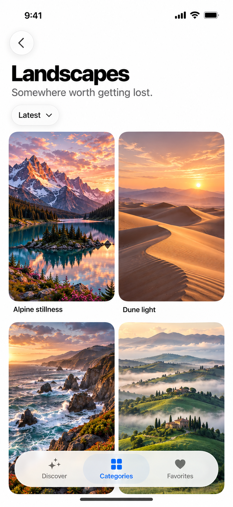
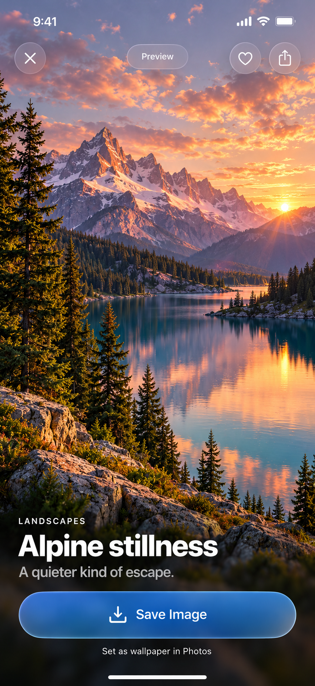

Walls · UI mockups
Walls / Design study 01 / iOS 27A fresh view, every day.
High-fidelity UI mockups for a simple wallpaper app. Rich artwork, four clear categories, and restrained Liquid Glass navigation.
Read the design handoff ↗

01 / DiscoverA daily feature and new artwork.

02 / CategoriesFour visual starting points.

03 / LandscapesA reusable category gallery.

04 / Wallpaper previewSee the artwork. Save your favorite.